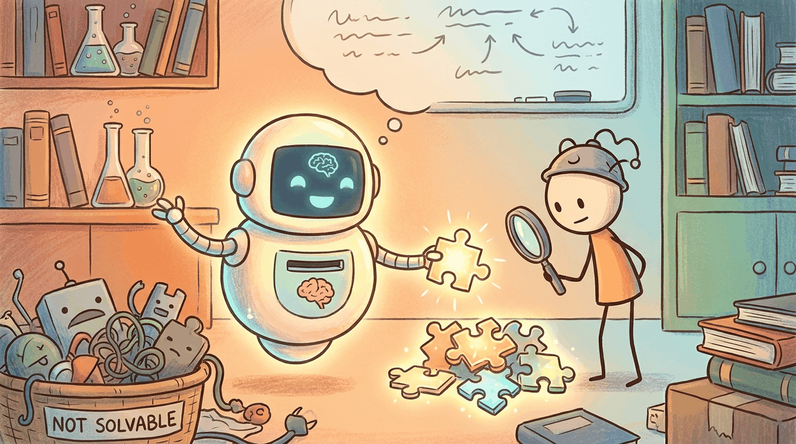

Every shipped LLM product starts as an answer to a question: is this a problem the model actually solves? Ideation is the disciplined search for problems whose underlying shape matches what an LLM is good at, where the user already pays for a worse solution, and where the data feedback loop will close. This chapter teaches the filters that separate a real opportunity from a thin wrapper.
The canonical anchor is OpenAI's ChatGPT launch (Nov 2022), the moment users began paying for an LLM at scale and a new product space opened. The exemplar of an LLM-worthy problem is Klarna's AI assistant (Feb 2024), which handled two-thirds of customer-service chats and did the work of roughly 700 contracted reps in its first month: a workflow whose shape (text in, text out, high volume, paid alternative) matched what an LLM does well.
Sections in This Chapter
- 67.1 Ideation: Finding LLM-Worthy Problems What kinds of problems LLMs solve well, what they don't, problem-discovery heuristics, the bet-my-own-money test, and how to map problems to LLM capabilities.
- 67.2 Problem-Discovery Heuristics Five repeatable techniques for finding LLM-worthy problems inside real organizations, with named cases from 2025-2026 deployments.
- 67.3 The Bet-My-Money Test and Capability Mapping The three uncomfortable questions that filter brainstormed ideas, plus the explicit mapping from problem shape to the LLM capability that will actually solve it.
What Comes Next
In the next section, Section 67.1: Ideation: Finding LLM-Worthy Problems, we get to work on the chapter's first concrete topic. After this chapter you continue to Chapter 62: LLM Product Management.